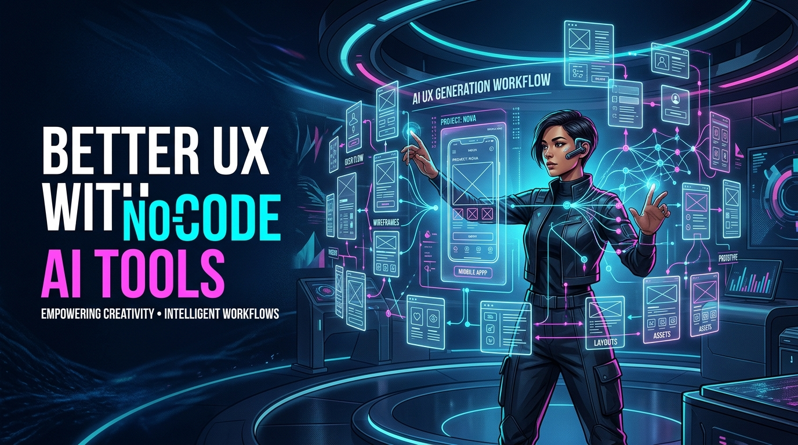

7 min readWhy UX-Focused Knowledge Matters More Than Ever In the Age of No-Code AI Design Tools
AI Generates. Humans Direct. Why foundational ergonomics, system thinking, and cognitive laws supersede prompt templates.
No-Code AI
UX Foundations
Cognitive Ergonomics